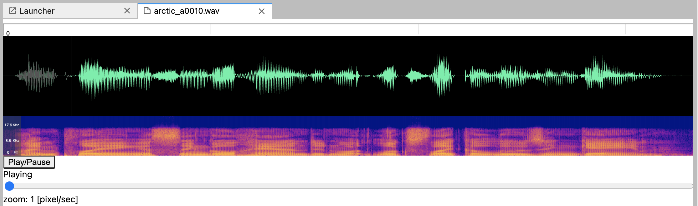

jupyterlab-wav extensionをjupyterlab 3.xへ対応させた上でWaveSurfer.jsで波形・スペクトログラムが描画できるようにした
この記事では以前にこのポストで作成したjupyterlab-wavのExtensionを
WaveSurfer.jsを用いて波形+スペクトログラムが描画できるように今年の2月ごろに改良したのでその過程について説明します。
(この文章自体3月に書いたまま放置していたため内容として古くなっている部分があるかもしれません)。
jupyterlab 3.x系への対応
Jupyter blogでも紹介されているようにJupyterlab 3.0が2021年の年始にリリースされました。
jupyterlab 3.x系ではこのポストでも触れたDebuggerが導入されたなどの話もありますが、
extension開発者にとって大きな変更点としてJupyterLab extensions can now be distributed as prebuilt extensions, which do not require a user to rebuild JupyterLab or have Node.js installed.
とあるように、prebuilt extensionをPyPIなどに登録することによってpipやcondaでextensionをインストールできるようになったことが挙げられます。
これにより、npmやjupyterによるローカルでのビルドなどが不要となったためユーザーはより気軽にExtensionを導入できるようになりました (後述のように従来通りnpmjsからインストールすることも可能です)。
そんな訳でjupyterlab-wavもpipでインストールできるようになりました。
$ pip install jupyterlab-wav
で簡単に導入できます。
WaveSurfer.jsの導入
以前のポストで作成したjupyterlab-wavはMIME Rendererのテンプレートをそのまま使っただけのものでしたが、
今回の更新にあたりWaveSurfer.jsを用いて波形・スペクトログラムが描画できるようになりました。
また、wavファイルだけでなくmp3ファイルとflacファイルも再生できるようになりました。

マルチチャンネルファイルのスペクトログラムが描画できないなど、まだまだ不具合などは残っていますが最低限使えるような状態にはなっています。
jupyterlab extensionの2.x系から3.x系への更新作業
2.x系から3.x系へとextensionを更新する際には Extension Migration Guideを見ながら作業を行いました。
手動でpackage.jsonのバージョンを上げる場合
下記の@jupyterlab/applicationのバージョンを^3.0.0へと変更すれば良いとのこと。
"dependencies": {
"@jupyterlab/application": "^3.0.0",
しかしjupyterlab 3.0には前述のようにextensionをPyPIやconda-forgeにアップロードすることでpipやcondaでextensionがインストールできるようになり、
そのためのパッケージングの仕組みが提供されているため、下記手順に沿って対応した方が良いと思われます。
upgradeスクリプトを用いた更新
Jupyterlab 3.0はupgrade用のスクリプトを公開しているのでこれを用いてバージョンを上げたいと思います。
まずpipでjupyter-packagingとcookiecutterをインストールします。
$ pip install jupyterlab -U
$ pip install jupyter-packaging cookiecutter
上記を実行した上でextensionのルートディレクトリで下記コマンドを実行すると対話的に各種項目を設定することができます。
python_name [wrist_jupyterlab_wav]:の部分はpythonパッケージ名となり、ここではデフォルトのまま実行していましたが、最終的には各種設定を手動でjupyterlab_wavに書き直しています。
$ python -m jupyterlab.upgrade_extension .
author_name [wrist <stoicheia1986@gmail.com>]:
python_name [wrist_jupyterlab_wav]:
labextension_name [@wrist/jupyterlab-wav]:
project_short_description [A JupyterLab extension for rendering wav files.]:
has_server_extension [n]:
has_binder [n]:
repository [https://github.com/wrist/jupyterlab-wav]:
overwrite scripts in package.json? [n]:
overwrite ".gitignore"? [n]:
overwrite "README.md"? [n]:
overwrite "tsconfig.json"? [n]:
overwrite "src/index.ts"? [n]:
overwrite "style/index.css"? [n]:
** package.json scripts must be updated manually
** skipped _temp_extension/.gitignore
** skipped _temp_extension/README.md
** skipped _temp_extension/tsconfig.json
** skipped _temp_extension/src/index.ts
** skipped _temp_extension/style/index.css
** Remove _temp_extensions directory when finished
(
上記を実行すると、package.jsonが下記のように上書きされます。
(base) jovyan@188a4999b58c:/mnt/work/python/tmp/jupyterlab-wav$ git diff
diff --git a/package.json b/package.json
index 0feeaed..cf1620b 100644
--- a/package.json
+++ b/package.json
@@ -4,8 +4,11 @@
"description": "A JupyterLab extension for rendering wav files.",
"author": "wrist <stoicheia1986@gmail.com>",
"homepage": "https://github.com/wrist/jupyterlab-wav",
- "repository": {"type": "git", "url": "https://github.com/wrist/jupyterlab-wav"},
- "license" : "MIT",
+ "repository": {
+ "type": "git",
+ "url": "https://github.com/wrist/jupyterlab-wav"
+ },
+ "license": "MIT",
"main": "lib/index.js",
"types": "lib/index.d.ts",
"style": "style/index.css",
@@ -16,27 +19,38 @@
],
"files": [
"lib/**/*.{d.ts,eot,gif,html,jpg,js,js.map,json,png,svg,woff2,ttf}",
- "style/**/*.{css,eot,gif,html,jpg,json,png,svg,woff2,ttf}"
+ "style/**/*.{css,eot,gif,html,jpg,json,png,svg,woff2,ttf}",
+ "style/index.js"
],
"jupyterlab": {
- "mimeExtension": true
+ "mimeExtension": true,
+ "outputDir": "wrist_jupyterlab_wav/labextension"
},
"scripts": {
- "clean": "rimraf lib && rimraf tsconfig.tsbuildinfo",
"build": "tsc",
- "prepare": "npm run clean && npm run build",
- "watch": "tsc -w",
+ "clean": "rimraf lib && rimraf tsconfig.tsbuildinfo",
+ "extension:disable": "jupyter labextension disable jupyterlab-wav",
+ "extension:enable": "jupyter labextension enable jupyterlab-wav",
"extension:install": "jupyter labextension install jupyterlab-wav",
"extension:uninstall": "jupyter labextension uninstall jupyterlab-wav",
- "extension:enable": "jupyter labextension enable jupyterlab-wav",
- "extension:disable": "jupyter labextension disable jupyterlab-wav"
+ "prepare": "npm run clean && npm run build",
+ "watch": "tsc -w"
},
"dependencies": {
- "@jupyterlab/rendermime-interfaces": "^2.0.0",
- "@lumino/widgets": "^1.5.0"
+ "@jupyterlab/rendermime-interfaces": "^3.0.2",
+ "@lumino/widgets": "^1.16.1"
},
"devDependencies": {
- "rimraf": "^2.6.3",
- "typescript": "~3.7.0"
- }
-}
+ "@jupyterlab/builder": "^3.0.0",
+ "@typescript-eslint/eslint-plugin": "^4.8.1",
+ "@typescript-eslint/parser": "^4.8.1",
+ "eslint": "^7.14.0",
+ "eslint-config-prettier": "^6.15.0",
+ "eslint-plugin-prettier": "^3.1.4",
+ "npm-run-all": "^4.1.5",
+ "prettier": "^2.1.1",
+ "rimraf": "^3.0.2",
+ "typescript": "~4.1.3"
+ },
+ "styleModule": "style/index.js"
+}
各種依存ライブラリのバージョンが更新されていることが分かります。
@jupyterlab/builderがdevDependencyに追加されているが、これはfederated extensionとしてextensionをビルドするために必要となるものです。
これはwebpackのような依存を内部に隠蔽し、pythonパッケージの一部として配布可能なassetを生成するものとのことです。
extension開発においては直接@jupyterlab/builderを対話的に操作することはないが、その代わりにjupyter labextension buildコマンドを用いることができます。
このコマンドはビルドスクリプトjlpm run buildの一部として自動的に実行されます。
また、python -m jupyterlab.upgrade_extension .の実行によりパッケージングに必要となるsetup.pyやpyproject.tomlなどが生成されています。
実際に実行したところ、下記のファイル/ディレクトリ群が追加されていました。
.eslintignore
.eslintrc.js
.github/
.prettierignore
.prettierrc
LICENSE
MANIFEST.in
_temp_extension/
install.json
pyproject.toml
setup.py
style/base.css
style/index.js
wrist_jupyterlab_wav/
eslintは構文チェック、prettierはフォーマッタであり、それらの設定ファイルが追加されています。
LICENSEは自動的に追加されていたが中身は3条項BSDライセンスでした。元々存在していたpackage.jsonにはLicenseをMITと記載していましたが、これを受けてBSD3-clauseに修正しています。
.github以下にはgithub actionsで使用するworkflow定義のymlファイルが格納されています。mainブランチに対して動作するため、今回はmasterに対して発動するように修正しています。
また、実際にgithubにpushしてactionsのタブを見るとbuild時にエラーが出ていました、これはpackage.jsonのscriptsにeslint:checkが存在していないためでした。
ここでは下記のscirptsを追加した上で、実際にeslintを実行して指摘箇所の修正を行いました。
"eslint": "eslint . --ext .ts,.tsx --fix",
"eslint:check": "eslint . --ext .ts,.tsx",
ここに限らずmigrateの過程でpackage.jsonにscriptが全て追加されておらず、build:prodのscriptがないために生じたエラーなどにも遭遇しましたが、
最終的にはhttps://github.com/jupyterlab/extension-cookiecutter-tsのリポジトリのpackage.jsonに記載のscriptを追加することで解決しています。
extensionのローカルインストール
過去に書いた記事では下記のようにビルドを実行していましたが、
$ jlpm install
$ jlpm run build
$ jupyter labextension install . --no-build
$ jupyter lab
テンプレートディレクトリのREADME.mdに記載されている下記手順のように実行することでローカルでのテスト用にextensionをjupyterlabにリンクできます。
$ pip install -e .
$ jupyter labextension develop . --overwrite
$ jlpm run build
jlpmによるビルドが終了した後にjupyterlabを立ち上げるとextensionが有効化されているはずです。
jupyterlab-wavの修正
今回の作業のついでにjupyterlab-wavを改良しています。
前述のように波形可視化ライブラリであるwavesurfer.jsを追加し、これを用いて描画を試みていますが、
下記のように最初にjlpmでパッケージをいくつか追加しています。
$ jlpm add wavesurfer.js
$ jlpm add @types/wavesurfer.js
$ jlpm add colormap
react-widgetの導入
以前のMIME Extensionのテンプレートを改造しただけのプロジェクトではIRenderMime.IRendererを実装するためのクラスを作り、
ファイルをjupyterlabで開いた際に呼ばれるrenderModelメソッドを定義してaudio要素にsrc属性を設定していただけでしたが、
今回の修正ではreact-widgetを下記コードのように導入しています。
import { ReactWidget } from '@jupyterlab/apputils';
import { IRenderMime } from '@jupyterlab/rendermime-interfaces';
import React from 'react';
import AudioComponent from './AudioComponent';
const CLASS_NAME = 'mimerenderer-wav';
/**
* A widget for rendering wav.
*/
export class WavWidget extends ReactWidget implements IRenderMime.IRenderer {
constructor(options: IRenderMime.IRendererOptions) {
super();
this._mimeType = options.mimeType;
this._src = '';
this.addClass(CLASS_NAME);
}
renderModel(model: IRenderMime.IMimeModel): Promise<void> {
const data = model.data[this._mimeType] as string;
this._src = `data:${this._mimeType};base64,${data}`;
this.update();
return Promise.resolve();
}
render() {
return <AudioComponent src={this._src} />;
}
private _src: string;
private _mimeType: string;
}
jupyterlab上でファイルを開いた際にrenderModelメソッドが呼ばれる点は同じですが、
この際にthis.update()を実行することでReactWidgetをextendsする際に必須となるrenderメソッドを明示的に呼び出しています。
renderメソッドは<AudioComponent ...>のJSXタグを返しますが、このAudioComponentはAudioComponent.tsx内で定義されたReactコンポーネントとなります。
Reactコンポーネント自体はjupyterlabと独立にReact単体のエコシステム上で別途動作検証やデバッグができるため、
ReactWidgetの導入によりextension開発が容易になりました。
extensionの公開方法
パッケージングの方法についてはextension tutorialのpackagingの部分に、 アップロードの方法についてはextension tutorialのpublishに関する部分に説明があります。
PyPIへのアップロード
自動生成されたsetup.pyを用いてパッケージのビルドを行います。
$ python setup.py build sdist
$ python setup.py build bdist_wheel
ビルドの成果物がdist以下に保存されるので、これらをPyPIへとアップロードします。 ここではtwineを使ってアップロードを行います。 予めTestPyPIにアップロードし問題ないことを確認した上でPyPIへとアップロードします。
$ pip install twine
$ twine upload --repository-url https://test.pypi.org/legacy/ dist/*
$ twine upload dist/*
npmjsへのアップロード
extensionはPyPIやconda-forgeにアップロードするだけでなく、従来のようにnpmへとアップロードすることもできます。 これはnpmパッケージとして配布することでユーザーがJupyterLab 1.xや2.xと同様にextensionを明示的にコンパイルして追加することが可能となるためであったり、 他のextensionからサービスとして利用されるextensionを公開したい場合はJavaScriptパッケージをpublishする必要があるためとのことです。
以前の記事ではnpmを使ってアップロードしていましたが、ここではjlpmを使ってアップロードを試みました。
$ jlpm publish --access=public
作成中に遭遇した問題
- 複数の音源ファイルを開いた場合に一つのタブに描画されてしまう
- 描画対象のdivをidで指定していたためであり、Reactの
useRefを用いた参照に切り替えることによって解決
- 描画対象のdivをidで指定していたためであり、Reactの
- 開発用の手順が失敗する
-
jupyter labextension develop . --overwriteに失敗したが、これはPyPIに公開するパッケージディレクトリ(jupyterlab_wav)の下に__init__.pyと_version.pyがないためでした - このテンプレートのファイルを加工して使うことで成功するようになりました
-
既知の問題
- Multi channelのaudioファイルが正しく描画されない
- 波形は
splitChannelsオプションを使うことで分割して描画されるようになりました - スペクトログラムは要対応
- 波形は
- タブの再描画などの際に以前に再生した音声が止まらないまま残ってしまう
- 再生中にタブを閉じると再生され続ける
- ReactWidgetの解放時に確実に止めるための何かが必要ではないかと思われる
- 再生中にタブを閉じると再生され続ける
今後改良したい点
- FFT長選択のUIをつける
- Jupyterlabから設定を行えるようにする
- キーボードショートカットをつける(スペースで再生など)
- timelineの単位の指定(サンプルなど)
- colormapの制御
Comments
Comments powered by Disqus